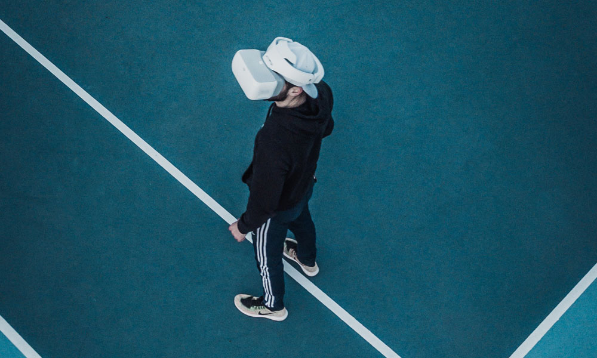

Sociala medier – 3 trender inför 2019
För inte så längesen fanns det varken smartphones eller sociala medier. På kort tid har det digitala tagit över nästan hela vår värld och gjorts till något som vi inte klarar oss utan. Frågorna är om plattformarna kommer utvecklas lika mycket under kommande år och hur framtidens trender i sociala medier egentligen ser ut?
Sociala medier utvecklas snabbt och det kommer de att göra även i framtiden. Trenderna lever kvar tills de blir överlappade av något bättre och detta sker i takt med att åren går. Men det är inte bara internet som utvecklas, utan även vårt beteende påverkas mycket när det gäller digitala kanaler och dess enorma utveckling.
För ett par år sedan tog Instagram Stories världen med storm. Möjligheten att sända live på Facebook och Twitter kom också, men ändå är det få som använt livetjänsten regelbundet – tills nu! Under 2018 har det inneburit en ny typ av interaktion där företag kunnat nå ut till alla potentiella målgrupper.
I framtiden kommer dessa tjänster bara bli ännu större. Plattformar som Snapchat, TikTok (tidigare Musical.ly) och Instagram är nästan helt fokuserade på bild och video, och kanske är det därför dessa kanaler har blivit så populära. Man har framkallat ett speciellt beteende hos den yngre generationen som inte har funnits tidigare och detta har gett resultat. Nu försöker därför många plattformar även anpassa detta nya beteende till den lite äldre målgruppen. Om de lyckas med att charma dem de kommande åren, ja, det återstå att se.
År 2019 är året då internet kopplar upp sig mot tv-världen. Det tros att vi om bara några få år kommer titta på anpassningsbara projektorer istället för tv-skärmar – och detta öppnar såklart upp till en helt ny digital värld.
På grund av denna innovation kommer fler företag spendera mer pengar på sociala kanaler och desto mindre pengar på klassiska tv-annonser. Internet och de sociala kanalerna kommer därför påverka tv-industrin för all framtid.
Virtual Reality och Augmented Reality blir allt mer populärt och företag använder det för att förbättra och förstärka kundupplevelsen. Användaren får alltså uppleva datorgenerade världar genom olika spel eller ha på sig speciella hjälmar eller glasögon. Dessa hjälpmedel är direktkopplade till datorn eller mobilen och kommer även implementeras på de sociala kanalerna inom snar framtid.
Som företag måste man ha koll på framtidens trender i sociala medier. Har man det, kan man också med god framförhållning planera sitt innehåll bättre i sina sociala kanaler. För när vårt samhälle blir allt mer digitalt gäller det att ligga ett steg före i allt man gör, annars är det lätt att man halkar efter. Allt eftersom användarna ökar blir kanalerna bara större och därför finns det en hel del vi behöver ha i åtanke när vi planerar våra sociala mediestrategier för 2019.